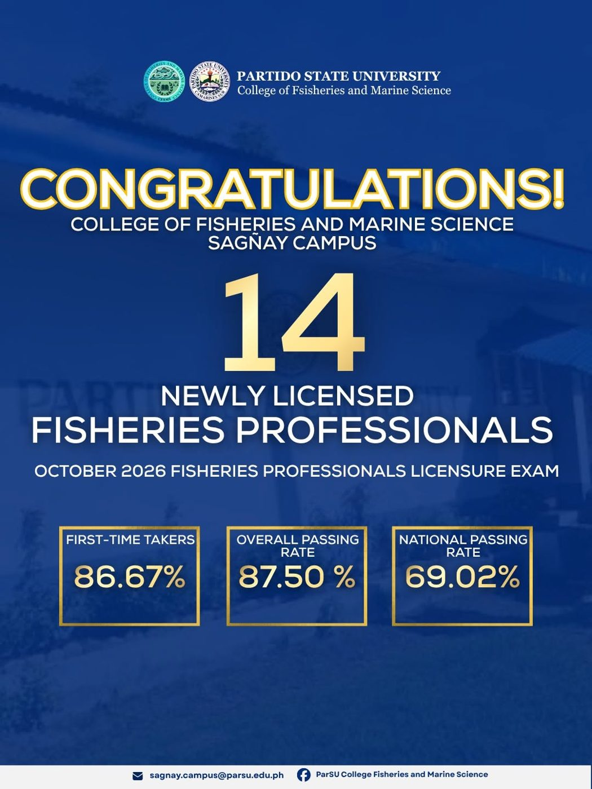
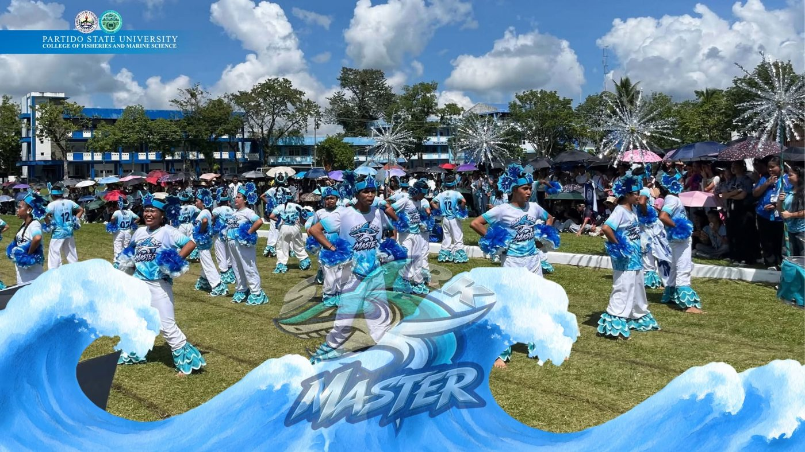
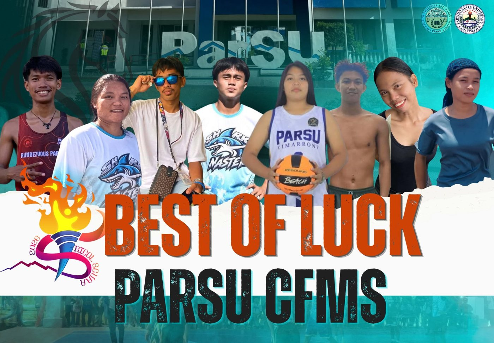
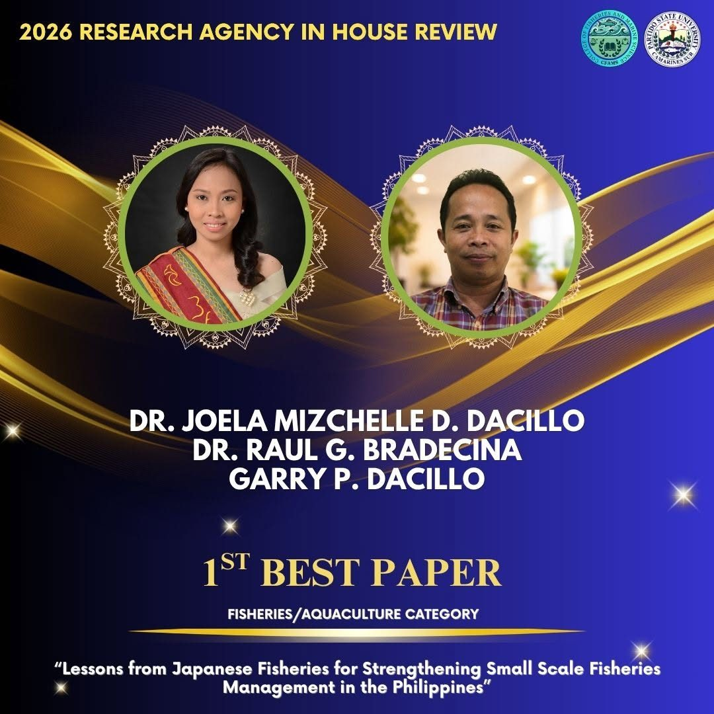
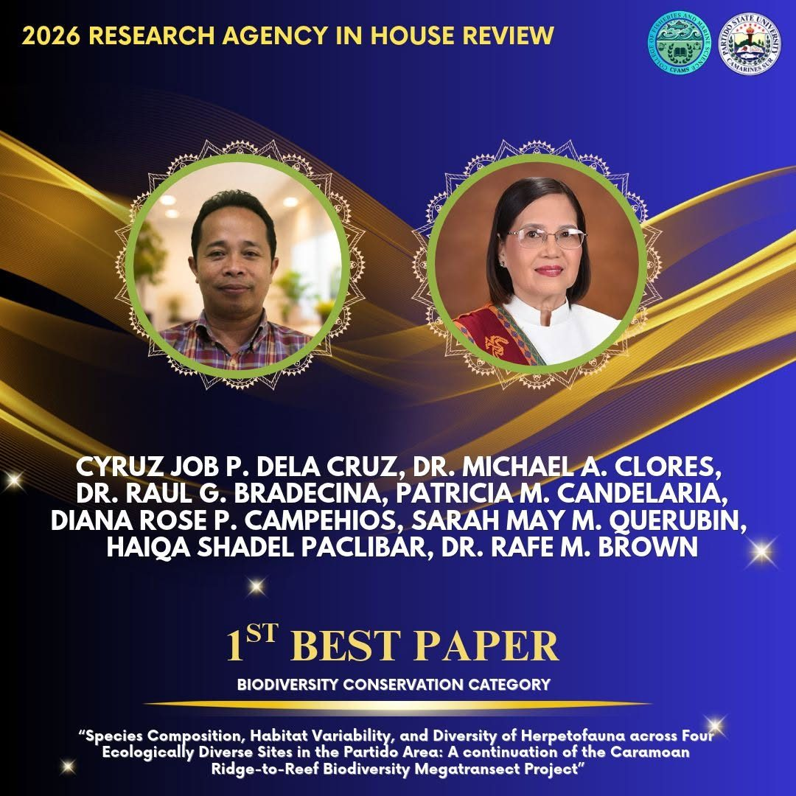
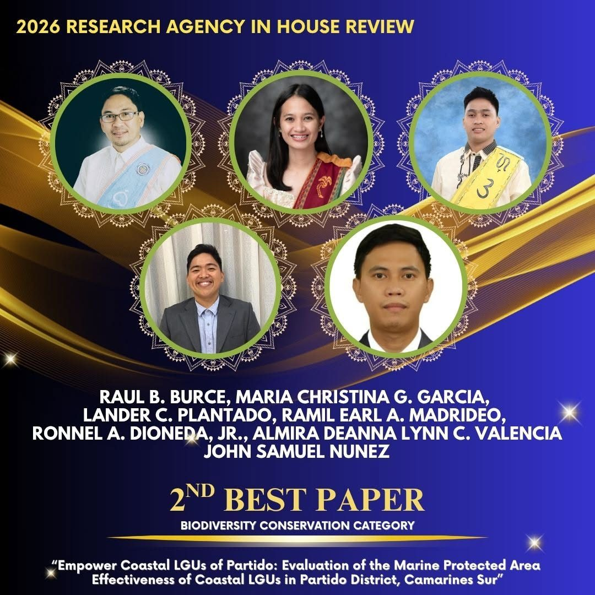
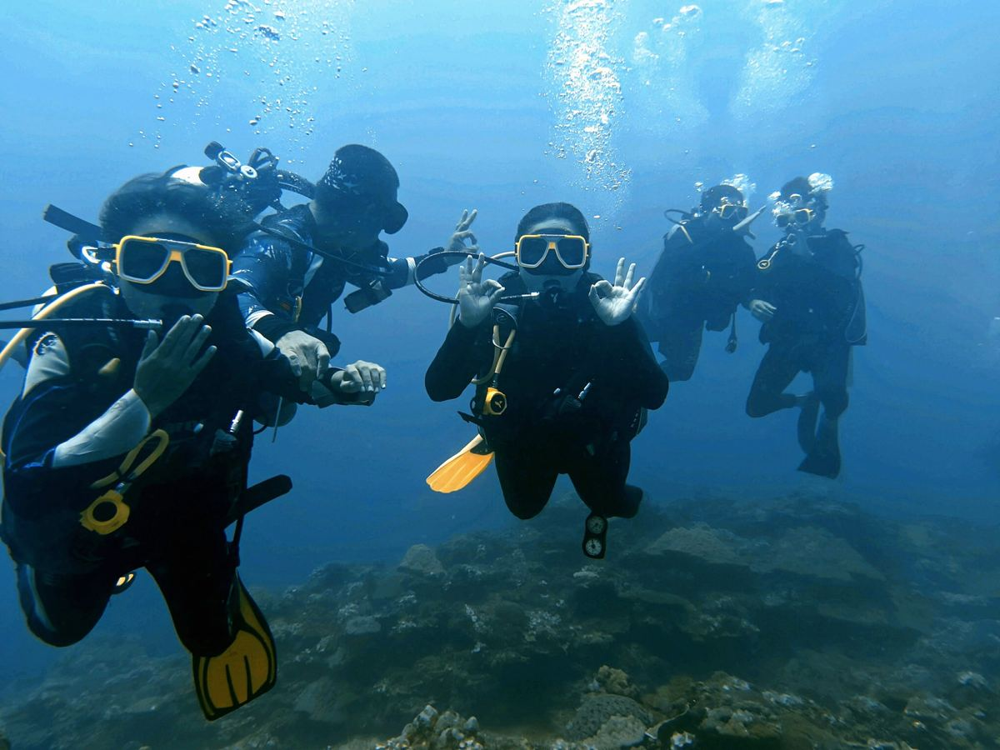
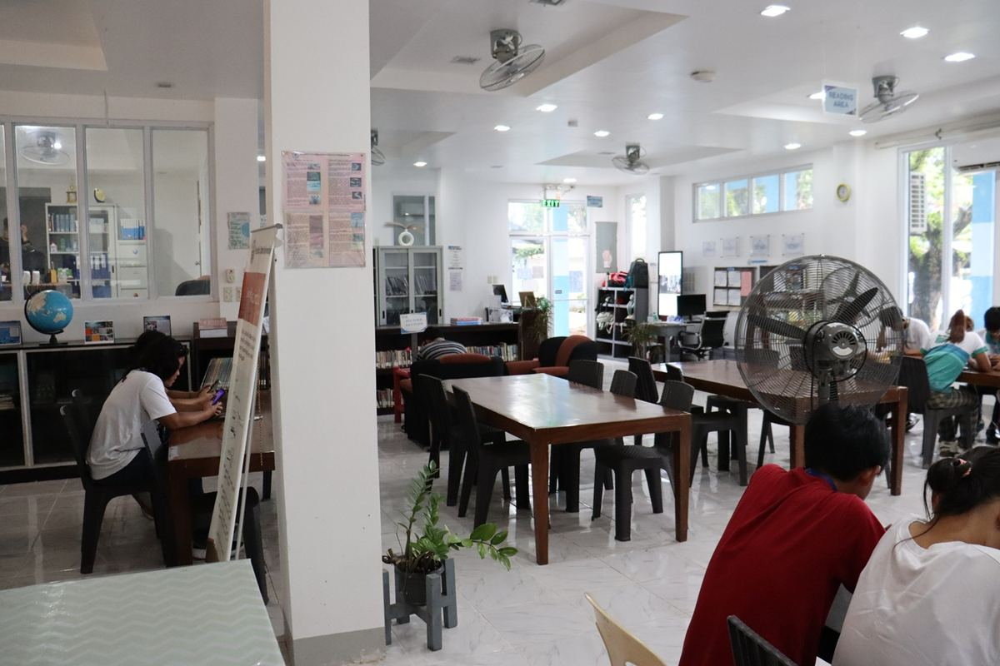
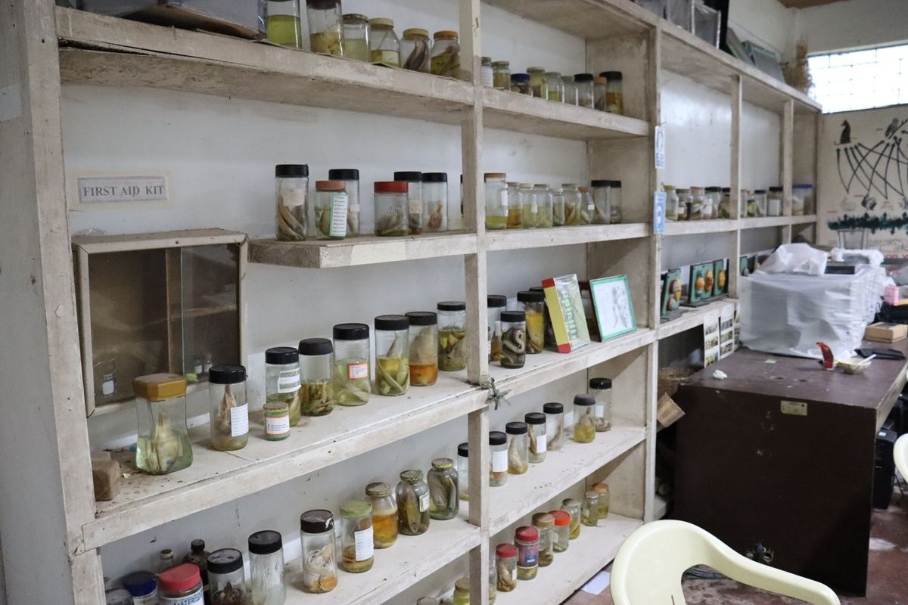

Congratulations14 graduates pass October 2026 fisheries board exam14 new Registered Fisheries Professionals — first-time takers 86.67%, overall 87.50%, national 69.02%. Read the story →

CongratulationsShark Masters shine at ParSU intramuralsMs. Liza Mae Briguera placed 2nd in Mr. and Ms. Intramurals. We fight together. We win together. Read the story →

Best of luckEight student-athletes set for Bicol Regional SCUAA Meet 2026Good luck, ParSU-CFMS athletes! The whole CFMS family is cheering for you. Read the story →

Congratulations1st Best Paper — Fisheries/aquaculture categoryDacillo, Dacillo — “Lessons from Japanese Fisheries for Strengthening Small Scale Fisheries Management in the Philippines.” Read the story →

Congratulations1st Best Paper — Biodiversity conservation categoryDela Cruz, Clores, Bradecina, Candelaria, Campehios, Querubin, Paclibar & Brown — Herpetofauna of the Partido Area. Read the story →

Congratulations2nd Best Paper — Biodiversity conservation categoryBurce, Gumba, Dioneda, Jr. et al. — Marine Protected Area Effectiveness of Coastal LGUs in Partido District. Read the story →

CongratulationsCampus passes ISO 9001:2015 audit with zero non-conformitiesAs reported by the University newsroom — a university-wide culture of quality. Read the story →

CongratulationsFive fisheries scholar-graduates earn BFAR honorsGraduating scholars from the College of Fisheries and Marine Sciences, recognized for academic excellence. Read the story →

MilestoneMarine Biology program undergoes standards reviewAdvancing quality in marine science education at CFMS–Sagñay. Read the story →
Campus highlights and milestones from ParSU Sagñay. .